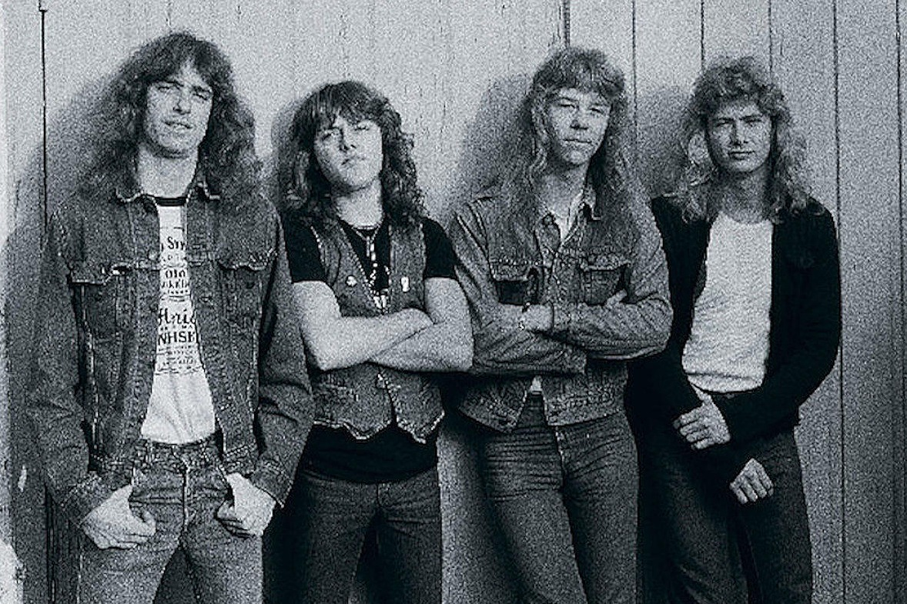

|  |
|
Metallica was formed in Los Angeles in late 1981 when Danish drummer Lars Ulrich placed an advertisement in a Los Angeles newspaper, The Recycler, which read, "Drummer looking for other metal musicians to jam with Tygers of Pan Tang, Diamond Head and Iron Maiden."Guitarists James Hetfield and Hugh Tanner of Leather Charm answered the advertisement. Although he had not formed a band, Ulrich asked Metal Blade Records founder Brian Slagel if he could record a song for the label's upcoming compilation album, Metal Massacre. Slagel accepted, and Ulrich recruited Hetfield to sing and play rhythm guitar. The band was officially formed on October 28, 1981, five months after Ulrich and Hetfield first met.
The band name came from Ulrich's friend Ron Quintana, who was brainstorming names for a fanzine and was considering MetalMania or Metallica. After hearing the two names, Ulrich wanted Metallica for his band, so he suggested Quintana use MetalMania instead. Dave Mustaine replied to an advertisement for a lead guitarist; Ulrich and Hetfield recruited him after seeing his expensive guitar equipment. In early 1982, Metallica recorded its first original song, "Hit the Lights", for the Metal Massacre I compilation. Hetfield played bass, rhythm guitar and sang while Lloyd Grant was credited with a guitar solo and Lars Ulrich played drums. Metal Massacre I was released on June 14, 1982; early pressings listed the band incorrectly as "Mettallica", angering the band. The song generated word of mouth and the band played its first live performance on March 14, 1982, at Radio City in Anaheim, California, with newly recruited bassist Ron McGovney. Their first live success came early; they were chosen to open for British heavy metal band Saxon at one gig of their 1982 US tour. This was Metallica's second gig. Metallica recorded its first demo, Power Metal, whose name was inspired by Quintana's early business cards in early 1982.Click the logo and become a fan club member!